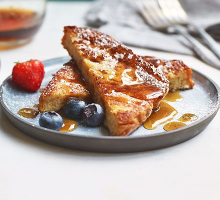

French toast are perfect meal for fast and taste brekfest. The recipe has just few ingridients, which you probably have in your kitchen. You need only skillet, few common ingredients and this recipe to create restaurant quality french toast in your home.

Whisk milk, eggs, vanilla, cinnamon, and salt together in a shallow bowl.
Lightly butter a griddle and heat over medium-high heat.
Dunk bread in the egg mixture, soaking both sides. Transfer to the hot skillet and cook until golden, 3 to 4 minutes per side. Serve hot.